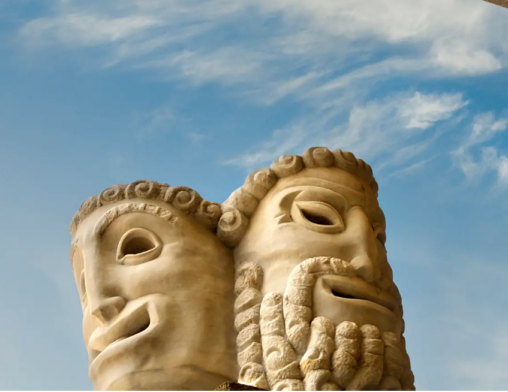

Salzburg Festival
Salzburg is above all the Festival Town. Every summer, the Salzburg Festival transforms Salzburg into one giant stage
UNESCO World Heritage
Art, culture and a unique history: Salzburg is a proud member of the UNESCO World Heritage List – a city of “outstanding value to humanity”.

City of Mozart
The life story of musical wunderkind Wolfgang Amadeus Mozart has its origins here in Salzburg.